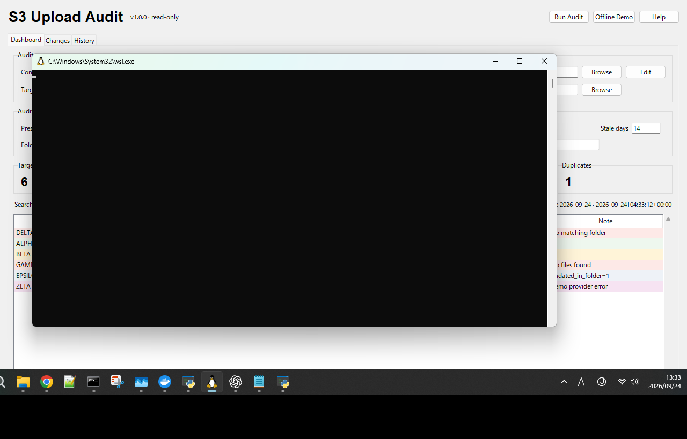

Read-only audit
AWS CLIではs3api list-objects-v2、S3 Browserではlist操作だけを内部生成します。任意クラウドコマンドは受け付けません。
Python / Desktop / S3
v1.0.0

対象名リストとS3上のフォルダ・ファイルを読み取り専用で照合し、最新アップロード、経過日数、欠損、前回との差分をDashboardで確認するWindowsデスクトップツールです。認証情報はアプリに保存せず、既存のAWS CLIまたはS3 Browser profileへ委譲します。
AWS CLIではs3api list-objects-v2、S3 Browserではlist操作だけを内部生成します。任意クラウドコマンドは受け付けません。
Healthy / Stale / Undated / Missing folder / No files / Provider errorを明示し、経過日数も確認できます。
同じ監査元の前回実行と比較し、New problem / Recovered / Changedなどを表示。履歴はローカルに最大50回保存します。
実S3へ接続せず、Dashboard・検索・filter・stale判定・差分表示を固定fixtureで確認できます。
subprocessはshell=False、timeout必須Windows向けソースリリースです。Offline Demoは追加ソフト不要。実監査にはAWS CLIまたはS3 Browser CLIを使用します。